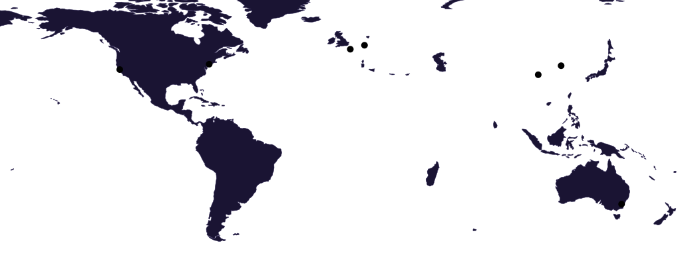

Face à l’IAOut of the Sandbox
Agents autonomes, fraude, robots : comment l’IA transforme la menace, et quels réflexes adopter pour y faire face.
Ouvrir le débrief
Des crises cyber aux nouveaux risques de l’IA, des débriefs interactifs pour prendre du recul et passer à l’action.
Agents autonomes, fraude, robots : comment l’IA transforme la menace, et quels réflexes adopter pour y faire face.
Ouvrir le débriefReconstituer le parcours d’agents sortis de leur environnement de test, jusqu’à leur intrusion chez Hugging Face.
Explorer la chronologieSuivre la propagation de l’attaque, ses impacts à travers le monde et l’enchaînement des événements, minute par minute.
Explorer la chronologie